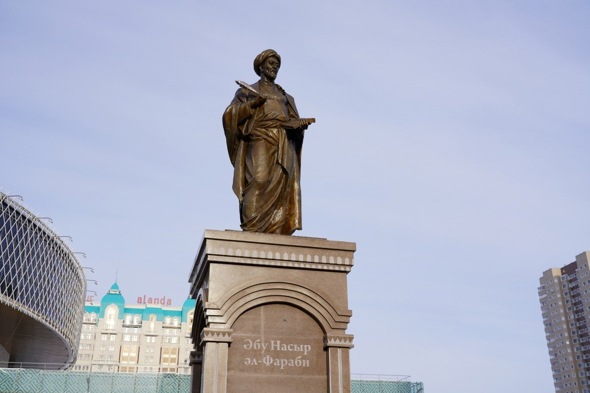

Фотосурет уақытша жүктелмеді')">Әбу Насыр әл-Фараби (шамамен 870–950) — философ, ғалым және музыка теоретигі. Шығыс пен әлемдік философияда оны «Екінші ұстаз» деп атайды.
Қосымша ақпарат: www.britannica.com
Сурет: https://inbusiness.kz/kz/last/elordada-abu-nasyr-al-farabi-eskertkishi-ashyldy